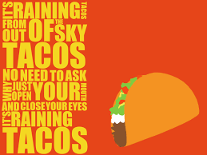

Taco Recipe

Description:
Our Taco dish is truly one of a kind. For only $11.99 you get 3
soft Tacos combined with a bottle of Corona
(19+ ID will be asked if U25)
Our signature taco dish comes from the heart of Mexico City. Our chef
works hard to prepare the beef from scratch, source local ingredients and
create a meal which the whole family will truly enjoy.
- Jalapenos
- Onions
- Tomato
- Lettuce
- AAA ground beef
- Ensure prepping is complete prior to starting
- Season the ground beef with salt, oil, + misc seasonings
- Pre-heat pan to medium temp
- Combine seasonings w/ veggies in bowl
- *Add oil + salt if no other seasonings are being added*
- With pan pre-heated, put seasoned raw veggies in pan
- Wait 5 mins, stirring often
- Add the ground beef which you prepared in step 1
-
Wait until ground beef has No PINK/RED color to it
- Strain meat to remove excess grease (optional)
- Dish complete!